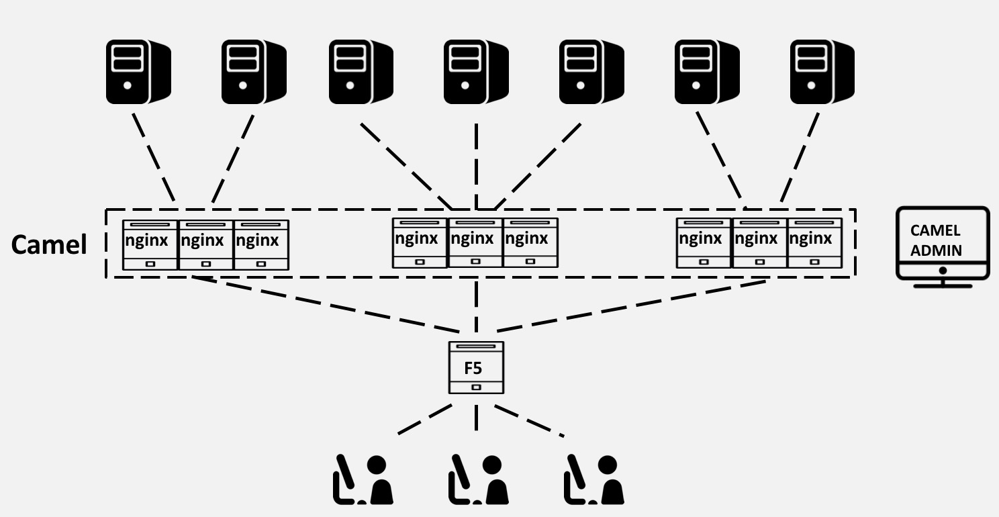

大众点评最开始采用F5做七层负载。随着网站规模的增大，F5成为了网络的瓶颈，主要原因有以下两点：
负载规则涉及到很多路径的正则匹配，这要求F5做很多的正则计算。这大大增加了F5的CPU负载。
F5需要对业务服务集群进行心跳检测。随着业务服务规模增大，F5需要对近千台服务器进行心跳检测。F5很难维持这个量级的心跳信息。
为此，我们决定使用软件工程的银弹－在架构上，增加新的层级。从而大众点评有两层负载，第一层为F5，做四层硬负载；第二层为Nginx集群，做七层硬负载。
